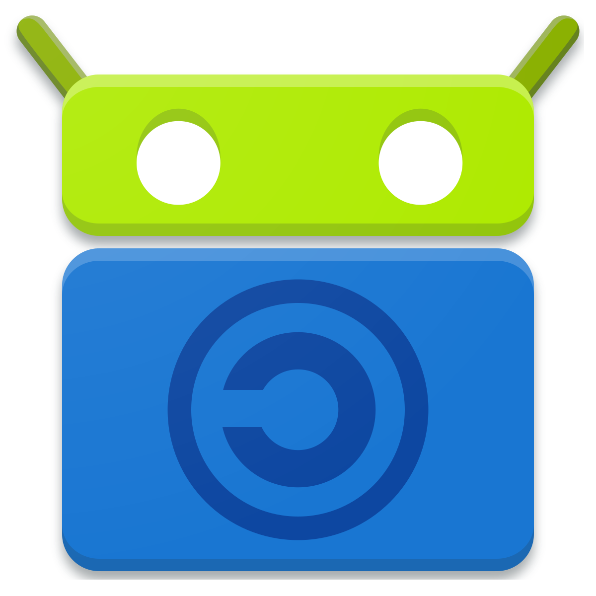
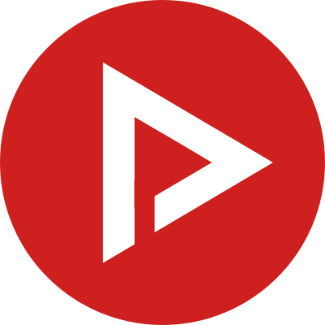
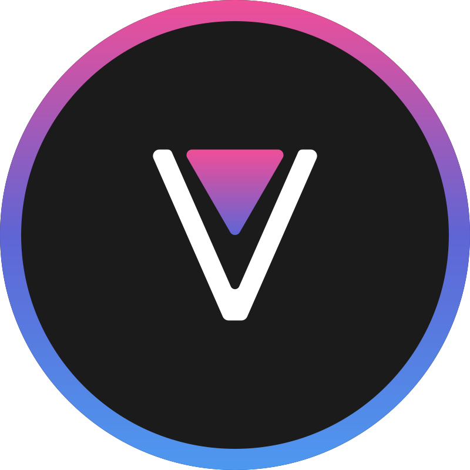
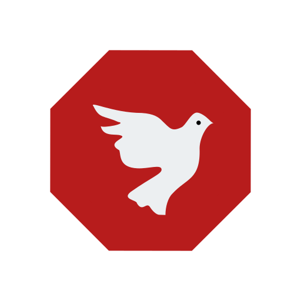
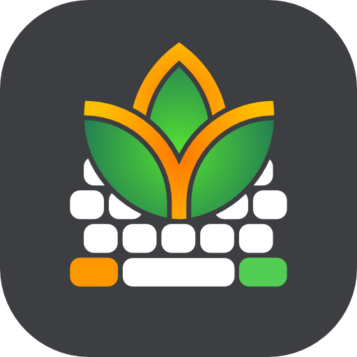
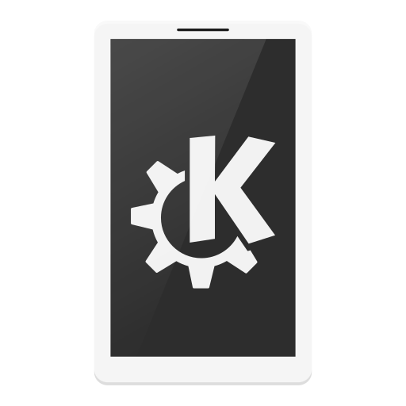
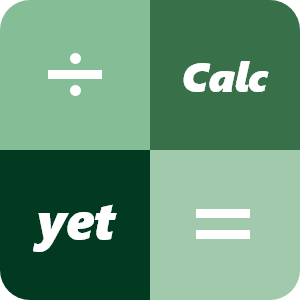
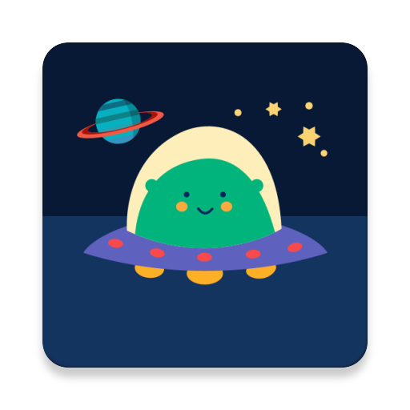

Android Apps
Heel veel apps hier zijn te installeren via F-Droid. Dit is een FOSS app store en je kan allemaal apps installeren. Soms moet je een repository (ook wel repo) toevoegen, om meer downloads te kunnen krijgen.
Aurora Store
Aurora store is ook een FOSS app store. F-droid kan geen apps installeren van Google Play Store, maar Aurora Store wel! Je kan het ook helemaal aanpassen van hoe je zelf wilt.
NewPipe X Sponsorblock en Youtube ReVanced
Newpipe is een lichte versie van youtube met ingebouwde adblocker. Dit is de x sponsorblock versie, dus heeft ook sponsorblock functies. Met Newpipe kan je niet inloggen en misschien van je ReVanced fijner. Youtube ReVanced is een alternatief voor Youtube Vanced (deze wordt nu niet meer gemaakt, want Google was aan het gayen) en is simpel weg gratis, nog betere, Youtube premium. Youtube ReVanced moet je zelf patches met de ReVanced Manager. Als je niet de goede versie hebt, moet je die eerst downloaden van APKMirror.
 AdAway
AdAway is een android adblocker, dat ook kan worden gebruikt met root. Het blocked bijna elke advertensie in apps (vooral van die kut games op de app store). AdAway staat op F-Droid.
K-9 Mail en FairEmail
K-9 Mail en FairEmail zijn mail clients voor Android en zijn beide FOSS. Je kan het helemaal aanpassen en ze hebben beide veel functies. K-9 mail en FairEmail staan op F-Droid. Zoek degene uit die jij fijner vindt. FairEmail is wel aan te raden om op Google Play Store (of Aurora Store) te downloaden, omdat je dan ook Outlook support hebt.
FlorisBoard
FlorisBoard is een FOSS toetsenbord voor Android (net als Gboard of Samsung Keyboard). Het heeft heel veel functies en is gemakkelijk te gebruiken.
KDE Connect
KDE Connect is een communicatie app voor Android, Windows, Linux en Mac gemaakt door KDE. Je kan met je telefoon je pc gesturen, files doorsturen en delen en nog veel meer!
yetCalc
yetCalc is een open source rekenmachine, converter en nog veel meer.
Infinity for Reddit
Infinity is een open source reddit client. Het is snel en heeft veel features.
